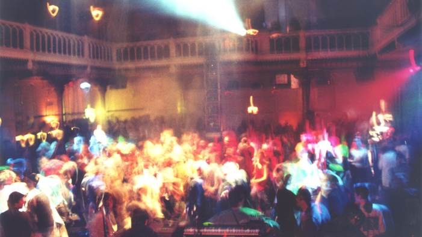
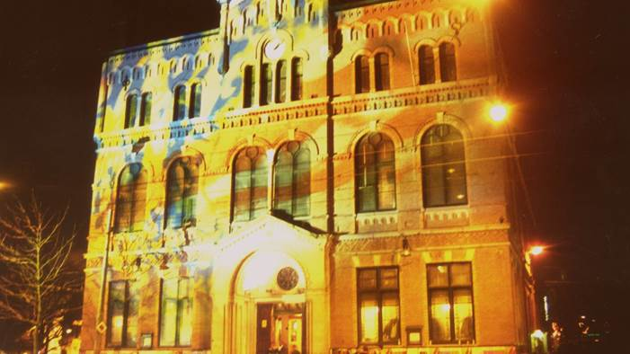

BierHier
Uitjes naar concerten in Amsterdam
| The Cat Empire | ||
|  | ||
Deze feestelijke band uit Melbourne, Australië speelt een mix van jazz, ska, funk, rock, en om het rijtje af te maken ook nog een beetje latin/salsa. De band heeft een weergaloze live reputatie en ze maken alle festivaltenten en concertzalen onveilig. Ben jij klaar voor een feestje? Kom dan op 13 oktober 2015 naar Paradiso en vier het mee! | ||
 | ||
| Yorick van Norden | ||
|  | ||
Bitterzoet. Dat is de muziek van Yorick van Norden, de Haarlemmer die met The Hype als jongmens z'n weg vond naar het concertpodium. Yorick grossiert in aanstekelijke liedjes; op het eerste gehoor vrolijk en zorgeloos, maar in Yorick's geval altijd gelaagd. In oktober presenteert hij zijn album Happy Hunting Ground, op 9 november 2015 staat hij met zijn band in Paradiso Amsterdam. | ||